Una GitHub Action que dibuja un tren en pixel art a partir de tu actividad pública en GitHub: los vagones crecen con tus contribuciones, la franja toma el color de tu lenguaje principal y la velocidad depende de lo que hiciste ayer.

Prueba los trenes y los fondos con controles en vivo, y pega el JSON de tu propio tren o ciudad para verlo al instante, con los mismos errores que daría la Action.
Abrir el playgroundDiez modelos en Claude Code, Codex y Antigravity diseñan el mismo tren CAF y el mismo skyline, con sus tokens, tiempos y resultados lado a lado.
Ver la comparativa